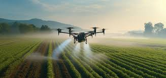
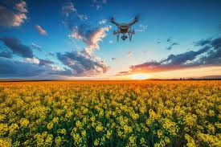

Os drones têm desempenhado um papel significativo na agricultura moderna, oferecendo uma variedade de aplicações que melhoram a eficiência, a produtividade e a sustentabilidade.
Aplicações dos Drones na Agricultura
Os drones são utilizados para uma variedade de tarefas na agricultura moderna:
- Monitoramento de Culturas: Capturam imagens de alta resolução para monitorar o crescimento das plantas, detectar doenças e avaliar o estado nutricional.
- Aplicação de Defensivos Agrícolas: Realizam a pulverização precisa de fertilizantes, pesticidas e herbicidas, reduzindo o uso excessivo de produtos químicos.
- Mapeamento e Sensoriamento Remoto: Utilizam sensores para coletar dados sobre a saúde das plantas e a qualidade do solo, ajudando na gestão eficiente dos recursos.
- Gestão de Irrigação: Determinam as necessidades hídricas das culturas para uma irrigação mais eficaz e sustentável.
- Monitoramento de Gado: Contam e rastreiam animais, verificando sua saúde e identificando possíveis problemas.

Vantagens e Benefícios
O uso de drones na agricultura proporciona diversos benefícios:
- Redução de Custos: Minimiza o desperdício de insumos e otimiza o uso de recursos, resultando em operações mais econômicas.
- Economia de Tempo: Automatiza tarefas que exigiriam horas de trabalho manual, permitindo que os agricultores se concentrem em outras atividades estratégicas.
- Minimização do Impacto Ambiental: Reduz o uso de produtos químicos e a emissão de gases de efeito estufa, promovendo práticas agrícolas mais sustentáveis.
- Melhoria na Tomada de Decisão: Fornecem dados precisos e em tempo real para uma gestão mais informada e eficiente da fazenda.
- Acesso a Áreas Inacessíveis: Exploram terrenos difíceis de alcançar ou perigosos para inspeções detalhadas.
